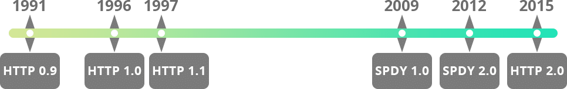
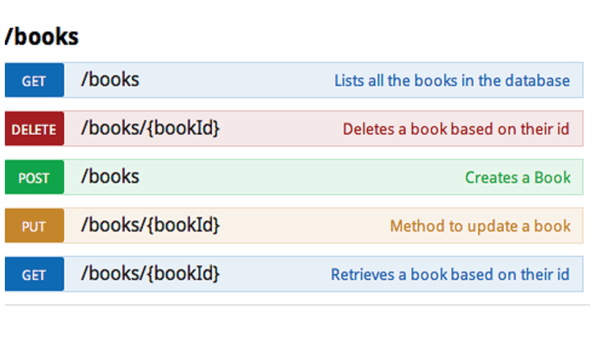
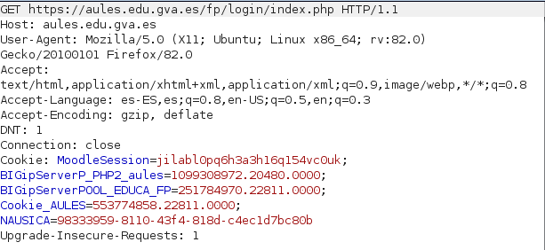
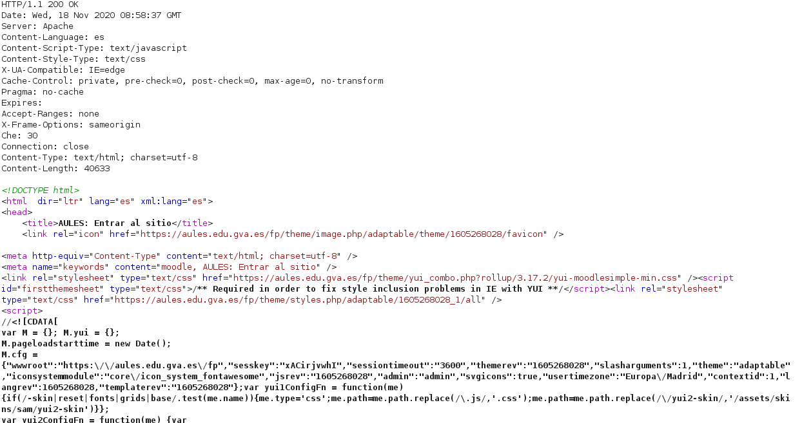

3.3. Los protocolos HTTP y HTTPS
El protocolo HTTP
Historia
El protocolo de transferencia de hipertexto (HTTP, Hypertext Transfer Protocol) es el motor que da vida a Internet, ya que es la base para la web (www, world wide web).
Desde un punto de vista histórico, la web fue creada en 1989 en el Consejo Europeo para la Investigación Nuclear (CERN, Centro Europeene pour la Recherche Nucléaire), con sede en Ginebra, justo en la frontera entre Suiza y Francia. Cabe decir que este organismo disponía (y dispone) de una ampl*ia plantilla de científicos de diferentes países de Europa que trabajan en sus aceleradores de partículas. En consecuencia, muchos equipos de trabajadores están integrados por miembros de nacionalidades diferentes. Además, muchos de los experimentos que se realizan destacan por su complejidad y requieren años y años de planificación y de construcción de equipamientos.
Fue a raíz de la necesidad de disponer de múltiples grupos de científicos repartidos por el mundo y colaborando entre ellos (enviándose informes, dibujos, esquemas, fotos y todo tipo de documentos) que nació la web.
Es en los inicios del protocolo HTTP, a mediados del año 1990, cuando encontramos la versión 0.9. Esta versión tenía como única finalidad transferir datos por Internet en forma de páginas web escritas en lenguaje de marcado de hipertexto (HTML, HyperText Markup Language). A partir de la versión 1.0 del protocolo surgió la posibilidad de transferir mensajes con encabezados que describían el contenido de los mensajes.
Versiones
La primera versión: HTTP/1
La historia de HTTP empezó en 1989, cuando Tim Berners-Lee y su equipo del CERN (Suiza) empezaron a desarrollar la World Wide Web. La versión inicial de HTTP fue bautizada con el número de versión 0.9, consistía en una sola línea y solo permitía solicitar un archivo HTML del servidor cada vez.
El servidor entonces no hacía más que transferir el archivo solicitado, de manera que esta versión del protocolo solo podía manejar archivos HTML.
El primer estándar oficial: HTTP/1.1
HTTP/1.1 aclaró ambigüedades y añadió numerosas mejoras:
-
Una conexión podía ser reutilizada, ahorrando así el tiempo de re-abrirla repetidas veces.
-
Enrutamiento('Pipelining' en inglés) se añadió a la especificación, permitiendo realizar una segunda petición de datos, antes de que fuera respondida la primera, disminuyendo de este modo la latencia de la comunicación.
-
Se permitió que las respuestas a peticiones, podían ser divididas en sub-partes.
-
La negociación de contenido, incluyendo el lenguaje, el tipo de codificación, o tipos, se añadieron a la especificación, permitiendo que servidor y cliente, acordasen el contenido más adecuado a intercambiarse.
-
Gracias a la cabecera, Host, pudo ser posible alojar varios dominios en la misma dirección IP.
Un protocolo de mayor rendimiento HTTP/2
Según pasaban los años, las páginas web se volvían cada vez más amplias y complejas. Para cargar una web moderna en el navegador, este tiene que solicitar muchos megabytes de datos y enviar hasta cien solicitudes HTTP. HTTP/1.1 está pensado para procesar solicitudes una tras otra en una misma conexión, de manera que cuanto más compleja sea una página web, más tardará en cargarse y mostrarse.
Por esta razón, Google desarrolló un nuevo y experimental protocolo, el SPDY o Speedy, que despertó un gran interés entre los desarrolladores y permitió que en 2015 se publicara la versión HTTP/2 del protocolo. Este estándar incluye múltiples mejoras que tienen como objetivo acelerar la carga de las páginas web.
La versión HTTP/2 se extendió rápidamente y las páginas web con mucho tráfico fueron de las primeras en adoptarla. Actualmente (con fecha de enero de 2020), según W3Techs, un 42 % de las páginas web utilizan la versión HTTP/2.

El futuro: HTTP/3
Un punto débil de todas las versiones de HTTP usadas hasta ahora es el protocolo de control de transmisión (TCP) en el que se basan. Este protocolo requiere que el receptor de cada paquete de datos confirme la recepción antes de que pueda enviarse el siguiente paquete. De este modo, basta con que se pierda un paquete para que todos los demás tengan que esperar a que dicho paquete sea transmitido de nuevo.
Para evitarlos, la nueva versión HTTP/3 no funcionará con TCP, sino con UDP, que no aplica este tipo de medidas correctivas. A partir de UDP, se ha creado el protocolo QUIC (Quick UDP Internet Connections), que será la base de HTTP/3.
Funcionamiento del protocolo HTTP
Ya hemos comentado que el protocolo HTTP tiene un funcionamiento bastante sencillo basado en el envío de mensajes entre cliente y servidor.
Gráficamente podemos resumir el proceso de comunicación HTTP como sigue:

-
Un usuario accede a una URL, seleccionando un enlace de un documento HTML o introduciéndola directamente en el campo correspondiente del cliente Web.
-
El cliente Web descodifica la URL, separando sus diferentes partes: el protocolo de acceso, la dirección DNS o IP del servidor, el posible puerto opcional (el valor por defecto es 80) y el objeto requerido del servidor.
http://direccion[:puerto][path]Ejemplo: http://www.miweb.com/documento.html -
Se abre una conexión TCP/IP con el servidor, llamando al puerto TCP correspondiente. En ese momento, se realiza la petición HTTP. Para ello, se envía el comando necesario (GET, POST, HEAD,...), la dirección del objeto requerido (el contenido de la URL que sigue a la dirección del servidor), la versión del protocolo HTTP empleada y un conjunto variable de información, que incluye datos sobre las capacidades del navegador (browser), datos opcionales para el servidor, etc.
-
El servidor devuelve la respuesta al cliente. Consiste en un código de estado y el tipo de dato MIME de la información de retorno, seguido de la propia información.
-
Se cierra la conexión TCP. Este proceso se repite en cada acceso al servidor HTTP. Por ejemplo, si se recoge un documento HTML en cuyo interior están insertadas 2 imágenes y 1 vídeo, el proceso anterior se repite cuatro veces, una para el documento HTML y tres más para los recursos (la dos imágenes y el vídeo).
Comandos o métodos HTTP
HTTP define un conjunto de métodos de petición para indicar la acción que se desea realizar para un recurso determinado.

El estándar HTTP/1.0 recoge únicamente tres comandos, que representan las operaciones de recepción y envío de información y chequeo de estado:
-
GET: se utiliza para solicitar cualquier tipo de información o recurso al servidor. Cada vez que se pulsa sobre un enlace o se teclea directamente a una URL se usa este comando. Como resultado, el servidor HTTP enviará el recurso correspondiente.
-
HEAD: se utiliza para solicitar información sobre el recurso: su tamaño, su tipo, su fecha de modificación… Es usado por los gestores de cachés de páginas o los servidores proxy, para conocer cuándo es necesario actualizar la copia que se mantiene del recurso. Con HEAD se podrá comprobar la última fecha de modificación de un recurso antes de traer una nueva copia del mismo.
-
POST: sirve para enviar información al servidor, por ejemplo, los datos contenidos en un formulario. El servidor pasará esta información a un proceso encargado de su tratamiento.
La versión 1.1 del protocolo incorpora unos pocos comandos más como son: OPTIONS, PUT, DELETE, TRACE y CONNECT. Veamos algunos de ellos:
-
OPTIONS: Devuelve los métodos HTTP que el servidor soporta para una URL específica. Esto puede ser utilizado para comprobar la funcionalidad de un servidor web mediante petición en lugar de un recurso específico.
-
DELETE: sirve para eliminar un recurso especificado en la URL, aunque pocas veces sera permitido por un servidor web.
-
TRACE: comando que permite hacer un sondeo para saber todos los dispositivos de la red por los que pasa nuestra petición. Así podremos descubrir si la petición pasa a través dispositivos intermedios o proxys antes de llegar al servidor Web.
-
PUT: puede verse como el comando inverso a GET. Nos permite escribir datos en el servidor o, lo que es lo mismo, poner un recurso en la URL que se especifique. Si el recurso no existe lo crea sino lo reemplaza. La diferencia con POST puede ser algo confusa; mientras que POST está orientado a la creación de nuevos contenidos, PUT está más orientado a la actualización de los mismos (aunque también podría crearlos).
HTTP/2 no incluye métodos nuevos.
Ejemplo de petición y respuesta
Una solicitud HTTP es un conjunto de líneas que el navegador envía al servidor. Incluye:
-
El recurso solicitado, el método que se aplicará y la versión del protocolo utilizada.
-
Los campos del encabezado de solicitud: es un conjunto de líneas opcionales que permiten aportar información adicional sobre la solicitud y/o el cliente (navegador, sistema operativo, etc.). Cada una de estas líneas está formada por un nombre que describe el tipo de encabezado, seguido de dos puntos (:) y el valor del encabezado.
-
El cuerpo de la solicitud: es un conjunto de líneas opcionales que deben estar separadas de las líneas precedentes por una línea en blanco y que, por ejemplo, permiten la transmisión de datos al servidor de un formulario a través del método POST.

La sintaxis de una respuesta HTTP es un conjunto de líneas que el servidor envía al navegador. Incluye:
-
Una línea de estado donde figura el versión del protocolo usada, un código de estado/error y un texto con el significado de dicho código.
-
Los posibles códigos de estado se identifican con números de tres cifras y se clasifican en cinco grupos según sean informativos (1xx), de éxito en la solicitud (2xx), para redireccionar la solicitud (3xx), por error generado en el cliente (4xx) o bien por errores generados en el servidor (5xx) → Códigos de estado/error
-
Los campos del encabezado de la respuesta. Conjunto de lineas opcionales que aportan información adicional sobre la respuesta y/o el servidor.
-
El cuerpo de la respuesta que contiene el recurso (objeto) solicitado

Cabeceras HTTP
Las cabeceras HTTP son los parámetros que se envían en una petición o respuesta HTTP al cliente o al servidor para proporcionar información esencial sobre la transacción en curso. Estas cabeceras proporcionan información mediante la sintaxis 'Cabecera: Valor' y son enviadas automáticamente por el navegador o el servidor Web. → Cabeceras HTTP
Tipos MIME
El protocolo HTTP fue diseñado para transportar por red ficheros en formato ASCII, formados por texto plano. Con el paso del tiempo, surgió la necesidad de incluir diferentes tipos de ficheros no ASCII en las aplicaciones por Internet (imágenes, vídeos, sonidos, etc.) y, como consecuencia de ello, fue necesario buscar una solución: había que transformar estos formatos a tipo ASCII (u otros juegos de caracteres compatibles) para su correcta recepción en el navegador web.
Este problema ya había surgido en las aplicaciones de correo electrónico, cuando se necesitó enviar por MAIL ficheros no formados por texto plano, y por tanto, no compatibles con los juegos de caracteres permitidos.
Para solucionar este problema se crearon los tipos MIME (Multipurpose Internet Mail Extensions), especificaciones para dar formato a mensajes no-ASCII, de forma que pudieran ser enviados por Internet e interpretados correctamente por los programas de correo locales.
Tipos de medios de Internet, previamente conocido como "tipos " o "tipos de contenido", es un estándar diseñado para indicar el tipo de información que presenta un archivo o un conjunto de datos. Este identificador puede ser útil para conocer el tipo de un archivo antes de descarcarglo y tener acceso a él. Es una buena pŕactica proveer información de tipos de medios siempre que sea posible, como en el caso de los elementos que cuentan con atributos como type, enctype, formenctype y accept.

Todo identificador de tipo de medio de Internet debe ajustarse al siguiente formato: tipo/subtipo
Donde:
tipo: Es la categoría general del recurso, como "text" (texto), "image" (imagen), "audio" (audio), "video" (video), etc.
subtipo: Es una descripción más específica del formato del recurso dentro de la categoría de tipo. Por ejemplo, "plain" (texto sin formato), "html" (página web HTML), "jpeg" (imagen JPEG), "mp3" (archivo de audio MP3), "mp4" (archivo de video MP4), etc.
Algunos ejemplos de identificadores de tipo de medio comunes son:
- text/plain: Archivo de texto sin formato.
- text/html: Página web en formato HTML.
- image/jpeg: Imagen en formato JPEG.
- audio/mp3: Archivo de audio en formato MP3.
- video/mp4: Archivo de video en formato MP4.
HTTPS
El Protocolo seguro de transferencia de hipertexto (en inglés, Hypertext Transfer Protocol Secure o HTTPS) es un protocolo de aplicación basado en el protocolo HTTP, destinado a la transferencia segura de datos de hipertexto, es decir, es la versión segura de HTTP.
La web es insegura por naturaleza. Cuando se diseñaron los protocolos en los que está basada (TCP/IP) no se tuvieron en cuenta muchos de los problemas que tiene la Internet moderna. Y el protocolo HTTP, para transferir páginas web, no añadió nada al respecto tampoco hasta mucho después, con la introducción del protocolo HTTPS (la "ese" es de "Seguro") allá por 1994 por la empresa Netscape. El protocolo HTTPS original utilizaba SSL (Secure Sockets Layer) como protocolo seguro de intercambio de claves y cifrado, pero en la actualidad está obsoleto y se emplea TLS (Transport Layer Security, que va por su versión 1.3). El estándar de HTTP sobre TLS, en realidad, no se configuró hasta mayo del año 2000.
Tradicionalmente, los navegadores le han indicado a sus usuarios que se estaban conectando a un sitio seguro utilizando un iconito, generalmente uno con un candado.
Según el navegador el aspecto cambia un poco, pero todos muestran el proverbial "candadito" al lado de la dirección:

Es decir, lo importante aquí es que hasta ahora los navegadores consideran HTTP como la norma, y HTTPS como la excepción, y por eso lo marcan de esta manera.
Funcionamiento de HTTPS
El funcionamiento básico de HTTPS se muestra en la página siguiente. Como se puede observar, utiliza conceptos de cifrado con clave simétrica y asimétrica que vimos en la introducción del módulo.